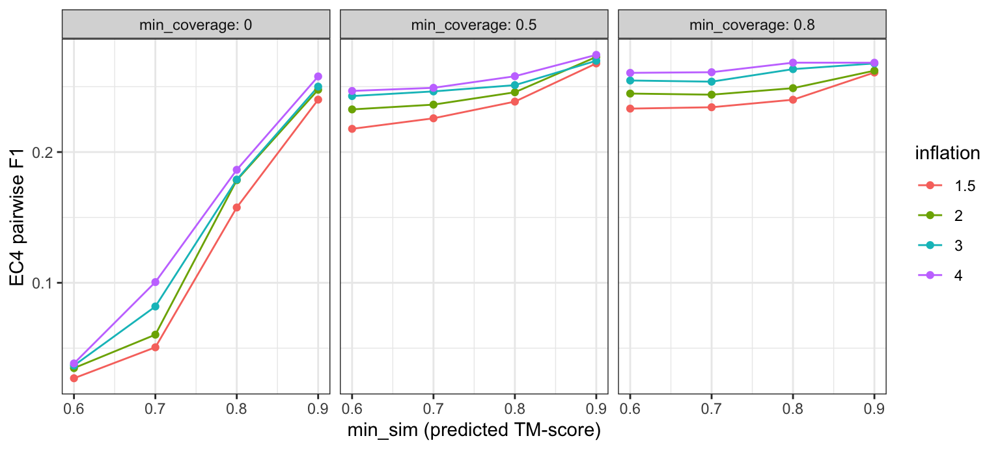

protein_similarity() and bin_proteins()
have three parameters: the similarity threshold min_sim,
the coverage threshold min_coverage and the MCL
inflation. This page scores a grid of the three against
known enzyme labels, using the simulation
universe of experimentally characterised Swiss-Prot enzymes.
library(repdist)
library(ggplot2)u <- readRDS(file.path("curated", "simulation_universe.rds"))
x <- u$proteins
ec4 <- setNames(u$annotation$ec4, u$annotation$protein)
ec3 <- setNames(u$annotation$ec3, u$annotation$protein)
length(x)
#> [1] 4920grid <- expand.grid(min_sim = c(0.6, 0.7, 0.8, 0.9),
min_coverage = c(0, 0.5, 0.8), inflation = c(1.5, 2, 3, 4))
nrow(grid)
#> [1] 48The two thresholds act independently on each pair, so one similarity
matrix per coverage threshold, computed at the lowest
min_sim, gives every other min_sim by zeroing
the pairs below it. The check below confirms this for the package
defaults.
n_cores <- BiocParallel::multicoreWorkers()
base <- lapply(c(`0` = 0, `0.5` = 0.5, `0.8` = 0.8), function(cv) {
protein_similarity(x, min_sim = 0.6, min_coverage = cv, n_cores = n_cores)
})
gate <- function(S, t) {
S[S < t] <- 0
diag(S) <- 1
S
}
stopifnot(isTRUE(all.equal(gate(base[["0.5"]], 0.7),
protein_similarity(x, min_sim = 0.7, min_coverage = 0.5,
n_cores = n_cores))))Each setting is scored on protein pairs. Precision is the share of pairs placed in one bin that carry the same label; recall is the share of same-label pairs placed in one bin; F1 is their harmonic mean. Pair counts grow with the square of bin size, so large mixed bins weigh heavily on precision.
pair_scores <- function(membership, labels) {
tab <- table(membership, labels[names(membership)])
same_bin_same_label <- sum(choose(tab, 2))
c(precision = same_bin_same_label / sum(choose(rowSums(tab), 2)),
recall = same_bin_same_label / sum(choose(colSums(tab), 2)))
}
results <- do.call(rbind, lapply(seq_len(nrow(grid)), function(k) {
g <- grid[k, ]
b <- bin_proteins(gate(base[[as.character(g$min_coverage)]], g$min_sim),
inflation = g$inflation)
sizes <- lengths(b$clusters)
s4 <- pair_scores(b$membership, ec4)
s3 <- pair_scores(b$membership, ec3)
data.frame(g, bins = length(sizes),
`singletons (%)` = 100 * sum(sizes == 1) / length(x),
`largest bin` = max(sizes),
`EC4 precision` = s4[["precision"]], `EC4 recall` = s4[["recall"]],
`EC4 F1` = 2 * prod(s4) / sum(s4),
`EC3 precision` = s3[["precision"]], `EC3 recall` = s3[["recall"]],
check.names = FALSE)
}))ggplot(results, aes(min_sim, `EC4 F1`, colour = factor(inflation))) +
geom_line() +
geom_point(size = 1.5) +
facet_wrap(~min_coverage, labeller = label_both) +
labs(x = "min_sim (predicted TM-score)", y = "EC4 pairwise F1",
colour = "inflation") +
theme_bw()
knitr::kable(results[order(results$min_coverage, results$min_sim,
results$inflation), ], digits = 3, row.names = FALSE)| min_sim | min_coverage | inflation | bins | singletons (%) | largest bin | EC4 precision | EC4 recall | EC4 F1 | EC3 precision | EC3 recall |
|---|---|---|---|---|---|---|---|---|---|---|
| 0.6 | 0.0 | 1.5 | 260 | 1.585 | 560 | 0.014 | 0.684 | 0.027 | 0.129 | 0.233 |
| 0.6 | 0.0 | 2.0 | 302 | 1.585 | 513 | 0.018 | 0.666 | 0.035 | 0.148 | 0.201 |
| 0.6 | 0.0 | 3.0 | 377 | 1.931 | 508 | 0.019 | 0.628 | 0.037 | 0.154 | 0.186 |
| 0.6 | 0.0 | 4.0 | 484 | 2.846 | 501 | 0.020 | 0.561 | 0.038 | 0.171 | 0.176 |
| 0.7 | 0.0 | 1.5 | 626 | 5.366 | 405 | 0.026 | 0.588 | 0.051 | 0.205 | 0.166 |
| 0.7 | 0.0 | 2.0 | 679 | 5.366 | 339 | 0.032 | 0.548 | 0.060 | 0.225 | 0.140 |
| 0.7 | 0.0 | 3.0 | 766 | 5.650 | 238 | 0.044 | 0.535 | 0.082 | 0.290 | 0.127 |
| 0.7 | 0.0 | 4.0 | 835 | 6.098 | 155 | 0.056 | 0.522 | 0.101 | 0.349 | 0.119 |
| 0.8 | 0.0 | 1.5 | 1319 | 13.720 | 90 | 0.094 | 0.483 | 0.158 | 0.463 | 0.086 |
| 0.8 | 0.0 | 2.0 | 1370 | 13.720 | 61 | 0.110 | 0.474 | 0.178 | 0.508 | 0.080 |
| 0.8 | 0.0 | 3.0 | 1421 | 13.841 | 60 | 0.112 | 0.445 | 0.179 | 0.522 | 0.076 |
| 0.8 | 0.0 | 4.0 | 1465 | 14.207 | 59 | 0.118 | 0.438 | 0.186 | 0.536 | 0.072 |
| 0.9 | 0.0 | 1.5 | 2389 | 32.947 | 43 | 0.189 | 0.330 | 0.240 | 0.672 | 0.043 |
| 0.9 | 0.0 | 2.0 | 2425 | 32.947 | 43 | 0.200 | 0.326 | 0.248 | 0.691 | 0.041 |
| 0.9 | 0.0 | 3.0 | 2472 | 33.150 | 43 | 0.208 | 0.313 | 0.250 | 0.709 | 0.039 |
| 0.9 | 0.0 | 4.0 | 2515 | 33.577 | 43 | 0.222 | 0.308 | 0.258 | 0.726 | 0.037 |
| 0.6 | 0.5 | 1.5 | 1486 | 14.858 | 59 | 0.143 | 0.458 | 0.218 | 0.658 | 0.077 |
| 0.6 | 0.5 | 2.0 | 1570 | 14.858 | 59 | 0.157 | 0.446 | 0.233 | 0.682 | 0.070 |
| 0.6 | 0.5 | 3.0 | 1673 | 15.508 | 59 | 0.170 | 0.428 | 0.243 | 0.702 | 0.064 |
| 0.6 | 0.5 | 4.0 | 1772 | 16.890 | 59 | 0.176 | 0.411 | 0.247 | 0.711 | 0.060 |
| 0.7 | 0.5 | 1.5 | 1604 | 16.667 | 59 | 0.151 | 0.449 | 0.226 | 0.670 | 0.072 |
| 0.7 | 0.5 | 2.0 | 1662 | 16.667 | 59 | 0.161 | 0.441 | 0.236 | 0.690 | 0.069 |
| 0.7 | 0.5 | 3.0 | 1743 | 17.154 | 59 | 0.173 | 0.430 | 0.246 | 0.711 | 0.064 |
| 0.7 | 0.5 | 4.0 | 1823 | 18.110 | 59 | 0.179 | 0.411 | 0.249 | 0.718 | 0.060 |
| 0.8 | 0.5 | 1.5 | 1871 | 21.524 | 58 | 0.166 | 0.421 | 0.239 | 0.700 | 0.064 |
| 0.8 | 0.5 | 2.0 | 1911 | 21.524 | 58 | 0.176 | 0.409 | 0.246 | 0.714 | 0.061 |
| 0.8 | 0.5 | 3.0 | 1955 | 21.728 | 58 | 0.183 | 0.403 | 0.251 | 0.730 | 0.059 |
| 0.8 | 0.5 | 4.0 | 2005 | 22.317 | 58 | 0.192 | 0.395 | 0.258 | 0.732 | 0.055 |
| 0.9 | 0.5 | 1.5 | 2557 | 35.346 | 43 | 0.231 | 0.319 | 0.268 | 0.754 | 0.038 |
| 0.9 | 0.5 | 2.0 | 2589 | 35.346 | 43 | 0.241 | 0.314 | 0.273 | 0.761 | 0.036 |
| 0.9 | 0.5 | 3.0 | 2638 | 35.630 | 40 | 0.246 | 0.299 | 0.270 | 0.763 | 0.034 |
| 0.9 | 0.5 | 4.0 | 2666 | 35.894 | 40 | 0.257 | 0.294 | 0.274 | 0.782 | 0.032 |
| 0.6 | 0.8 | 1.5 | 2211 | 28.293 | 58 | 0.174 | 0.355 | 0.233 | 0.716 | 0.053 |
| 0.6 | 0.8 | 2.0 | 2258 | 28.293 | 58 | 0.189 | 0.349 | 0.245 | 0.742 | 0.050 |
| 0.6 | 0.8 | 3.0 | 2343 | 28.984 | 55 | 0.204 | 0.338 | 0.255 | 0.758 | 0.046 |
| 0.6 | 0.8 | 4.0 | 2402 | 29.756 | 52 | 0.215 | 0.330 | 0.261 | 0.771 | 0.043 |
| 0.7 | 0.8 | 1.5 | 2238 | 28.841 | 58 | 0.175 | 0.353 | 0.234 | 0.719 | 0.053 |
| 0.7 | 0.8 | 2.0 | 2278 | 28.841 | 58 | 0.188 | 0.347 | 0.244 | 0.742 | 0.050 |
| 0.7 | 0.8 | 3.0 | 2362 | 29.472 | 56 | 0.204 | 0.337 | 0.254 | 0.759 | 0.046 |
| 0.7 | 0.8 | 4.0 | 2421 | 30.305 | 52 | 0.217 | 0.328 | 0.261 | 0.778 | 0.043 |
| 0.8 | 0.8 | 1.5 | 2349 | 31.159 | 53 | 0.185 | 0.340 | 0.240 | 0.732 | 0.049 |
| 0.8 | 0.8 | 2.0 | 2388 | 31.179 | 53 | 0.198 | 0.335 | 0.249 | 0.744 | 0.046 |
| 0.8 | 0.8 | 3.0 | 2455 | 31.626 | 53 | 0.220 | 0.328 | 0.263 | 0.764 | 0.041 |
| 0.8 | 0.8 | 4.0 | 2500 | 32.134 | 53 | 0.231 | 0.319 | 0.268 | 0.783 | 0.039 |
| 0.9 | 0.8 | 1.5 | 2801 | 40.671 | 43 | 0.243 | 0.281 | 0.261 | 0.781 | 0.033 |
| 0.9 | 0.8 | 2.0 | 2839 | 40.671 | 40 | 0.253 | 0.272 | 0.262 | 0.787 | 0.031 |
| 0.9 | 0.8 | 3.0 | 2878 | 40.833 | 38 | 0.270 | 0.266 | 0.268 | 0.804 | 0.029 |
| 0.9 | 0.8 | 4.0 | 2901 | 41.098 | 37 | 0.277 | 0.260 | 0.268 | 0.815 | 0.028 |
min_sim 0.7 and inflation 2) and EC3 precision drops to
0.22, against 0.69 with min_coverage 0.5.min_sim or inflation trades recall for precision:
across those settings EC4 F1 stays between 0.22 and 0.27. The package
defaults (min_sim 0.7, min_coverage 0.5,
inflation 2) give EC4 F1 0.24 with 17% singletons.sessionInfo()
#> R version 4.5.2 (2025-10-31)
#> Platform: aarch64-apple-darwin20
#> Running under: macOS 27.0.1
#>
#> Matrix products: default
#> BLAS: /System/Library/Frameworks/Accelerate.framework/Versions/A/Frameworks/vecLib.framework/Versions/A/libBLAS.dylib
#> LAPACK: /Library/Frameworks/R.framework/Versions/4.5-arm64/Resources/lib/libRlapack.dylib; LAPACK version 3.12.1
#>
#> locale:
#> [1] en_US/en_US/en_US/C/en_US/en_US
#>
#> time zone: America/New_York
#> tzcode source: internal
#>
#> attached base packages:
#> [1] stats graphics grDevices utils datasets methods base
#>
#> other attached packages:
#> [1] vegan_2.7-5 permute_0.9-10 ggplot2_4.0.3 repdist_0.99.0
#>
#> loaded via a namespace (and not attached):
#> [1] SummarizedExperiment_1.40.0 gtable_0.3.6
#> [3] xfun_0.58 bslib_0.11.0
#> [5] Biobase_2.70.0 lattice_0.22-9
#> [7] vctrs_0.7.3 tools_4.5.2
#> [9] generics_0.1.4 stats4_4.5.2
#> [11] parallel_4.5.2 tibble_3.3.1
#> [13] cluster_2.1.8.2 pkgconfig_2.0.3
#> [15] Matrix_1.7-5 RColorBrewer_1.1-3
#> [17] S7_0.2.2 S4Vectors_0.48.1
#> [19] lifecycle_1.0.5 compiler_4.5.2
#> [21] farver_2.1.2 Biostrings_2.78.0
#> [23] fontawesome_0.5.3 DESeq2_1.50.2
#> [25] Seqinfo_1.0.0 codetools_0.2-20
#> [27] htmltools_0.5.9 sass_0.4.10
#> [29] yaml_2.3.12 pillar_1.11.1
#> [31] crayon_1.5.3 jquerylib_0.1.4
#> [33] MASS_7.3-65 BiocParallel_1.44.0
#> [35] cachem_1.1.0 DelayedArray_0.36.1
#> [37] abind_1.4-8 MCL_1.0
#> [39] nlme_3.1-169 locfit_1.5-9.12
#> [41] tidyselect_1.2.1 digest_0.6.39
#> [43] Rtsne_0.17 dplyr_1.2.1
#> [45] labeling_0.4.3 splines_4.5.2
#> [47] fastmap_1.2.0 grid_4.5.2
#> [49] SparseArray_1.10.10 expm_1.0-0
#> [51] cli_3.6.6 magrittr_2.0.5
#> [53] S4Arrays_1.10.1 withr_3.0.3
#> [55] scales_1.4.0 rmarkdown_2.31
#> [57] pwalign_1.6.0 XVector_0.50.0
#> [59] matrixStats_1.5.0 otel_0.2.0
#> [61] evaluate_1.0.5 knitr_1.51
#> [63] GenomicRanges_1.62.1 IRanges_2.44.0
#> [65] viridisLite_0.4.3 mgcv_1.9-4
#> [67] rlang_1.3.0 Rcpp_1.1.2
#> [69] glue_1.8.1 BiocGenerics_0.56.0
#> [71] jsonlite_2.0.0 R6_2.6.1
#> [73] MatrixGenerics_1.22.0